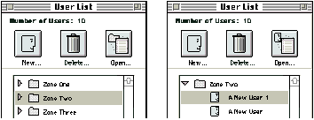

Macintosh users have a lifetime of experience seeing and manipulating objects in three
dimensions. Many developers are taking advantage of this experience by adding
three-dimensional elements to their human interfaces. 3-D effects can heighten the
ease of use, realism, and visual appeal of your application. This article discusses why
3-D effects add value to Macintosh applications and describes an easy way to add 3- D
effects to applications created with MacApp.
Three-dimensional effects can add life to any user interface. A 3-D interface is
inviting to users. It offers them tactility and can make the user interface elements
they work with stand out. When implemented correctly, the 3-D interface helps users
differentiate between the important contents of a window and the background. The
result is a friendlier, more accessible interface to your application.
This article tells you about some basic 3-D design principles that you can use and
describes one way to implement them. The accompanying code on this issue's CD
contains a set of adorners and classes that make it easy to bring your MacApp
applications into the third dimension.
Developers have been adding color and 3-D buttons to their products for a couple of
years now. Users like 3-D effects not only because they're nicer to look at but also
because they help define user interface elements within the workspace. There's a clear
message that both users and developers want 3-D effects, and developers aren't holding
off until Apple provides guidelines and tools to implement them.
We've seen many developers come up with their own implementations of gray windows
and 3-D buttons. Even within Apple there are several ideas about what a 3 - D user
interface should look like. Although this article doesn't present an official Apple 3-D
interface, it does describe designs and approaches that we developed while
implementing a 3-D interface and that we think can help you with your own 3-D
interface design.
In our three-dimensional look, windows have a light gray background instead of the
standard white background. Darker shades of gray and white on the edges of user
interface elements give the illusion that some elements are chiseled into the
background while others appear in bas-relief. There are two special cases: Modal
dialog boxes (windows with the definition ID of dBoxProc) have a gray background, but
do not have the chiseled effect because the color version of the window already has a
3-D border. Scrollable document windows (definition ID of documentProc) do not have
a gray background at all.
The 3-D look offers the user two advantages. First, it creates a clearer work
environment. White interface elements, such as text fields, checkboxes, and pop-up
menus, stand out from the light gray background and call attention to themselves. The
chiseled appearance, though subtle and unobtrusive, effectively communicates the
division of elements within the window.
The second advantage to the 3-D look is that it lets the user work on a more tangible,
tactile surface. The chiseled look gives strong clues that invite interaction. The slight
depression of text fields, for example, invites the user "into" the field to edit text. The
shading around buttons makes them look as if they project slightly from the gray
background. This makes buttons appear pressable, and they react appropriately when
the user clicks them. Our implementation of these elements strives to maintain the
crisp, clean graphical elegance that the Macintosh is known for.
The background gray we use for windows is the lightest gray in the Macintosh palette.
Its RGB value is 61166, 61166, 61166 (hex 0xEEEE). In small areas, this gray is
subtle; it appears to be darker in large areas that have only a few text fields or other
graphical elements.
Chiseled lines define the edges of windows, text fields, and checkboxes. They also help
group related items within a window. To create a chiseled effect on the light gray
background, use white and the fourth gray value from the Macintosh palette. The RGB
value of this medium light gray is 43690, 43690, 43690 (hex 0xAAAA). The way
you use these colors determines whether an object comes toward the user or recedes
into the background.
To chisel an object into the gray background, use gray shading on the object's top and
left edges and white on its bottom and right edges. To make an object project from the
gray background, reverse the order: use white on the top and left edges and gray on the
bottom and right edges. Note that the color of the top and left edges, whether white or
gray, always extends to the far corner pixels. Figure 1 shows both kinds of shading.
Figure 1 Shading Items for 3-D Effects
If you keep in mind that the imaginary light source on the desktop comes from the
upper left corner of the screen, you can always determine where to place the highlight
and shadow colors.
In windows, the background itself should appear to come forward by one pixel. To
create this effect, draw a white line on the top and left edges of the window and a gray
line on the bottom and right edges. Figure 2 shows a window with the background
drawn this way and a scrolling list chiseled into the background.
Figure 2 A Window With 3-D Effects
Though these chiseled effects are subtle, they do give a sense of depth, even if it's
almost subliminal in some cases. Remember, we don't want to hit anyone over the head
with these graphical enhancements. The goal is to add elegance and ease of use to the
work environment, not to scream out "Look at me!"
Icon buttons are buttons that use graphics to describe what they do. The page
orientation controls in the standard Page Setup dialog box are good examples of early
icon buttons. One of the great things about icon buttons is that they give pictorial clues
at a glance. The user can usually understand what the buttons do from the way they're
clustered and from their surrounding context. Another advantage of icon buttons is that
they're more accessible and easier to see than menu commands. This makes icon
buttons ideal for frequently used commands.
It's very easy to create poorly designed icons. If you decide to use icon buttons in your
application, take the extra time to do plenty of user testing to make sure your users
think your icons mean what you think they mean. This is especially important if you
decide not to use text labels for your buttons.
Our icon buttons are square or rectangular, and the button is a slightly darker shade of
gray so that it's easily distinguished from the light gray background. The illusion of
height invites the user to press a button. Figure 3 shows a few examples of icon
buttons.
Because icon buttons are dynamic elements with specific characteristics, they need to
maintain a distinct appearance even in black and white , just as checkboxes and radio
buttons do. On a black-and- white screen, we use a 50% dither pattern along the
bottom and right edges of an icon button to give the button height (see Figure 3). When
the user clicks the button, the entire button inverts, maintaining a subtle 3-D look.
Figure 3 Some Icon Buttons
To achieve a consistent 3-D effect, our icon buttons follow certain guidelines. We
always use a 2- to 3-pixel margin between the icon boundaries and the edge of the
surface of a button. The frame and shading that give the icon button its 3-D appearance
extend four pixels in each direction. Figure 4 shows a closeup of an icon button's
shading. When you design your icon buttons, don't forget the additional pixels that
you'll need for the shading. If you want to use a 32 x 32 icon in a button, the minimum
button size is 40 x 40. If you want the entire button, including its shading, to fit in a
32 x 32 space, the icon should fit in roughly a 22 x 22 area so that it sits comfortably
within the button.
Figure 4 Icon Button Detail
As you design your icons, try to keep the image as free form as possible. In general,
the image shouldn't follow the outline of the button. A square icon can hide the
appearance of a square button and diminish the 3-D effect when the user presses the
button. The more free form the image, the clearer it is within the button. The icon
buttons in Figure 3 are good examples of free-form images.
Our icon buttons can appear in one of three states: available, selected, and unavailable.
Figure 5 shows what these states look like.
Figure 5 Icon Button States
You can change the icon in the button depending on context. Dynamic buttons give the
user visual information about what effect the operation will have. For instance,
suppose you have a list that can show user names, folders, and documents at the same
time. When the user selects a folder or a document from the list, the icon button for
the Open operation displays a folder icon or a document icon; the folder case is shown
in the window on the left in Figure 6. When the user selects a user name from the list,
the button changes to display the standard user face icon, as shown on the right in
Figure 6. You need to be especially careful when designing dynamic icon buttons.
While the image in the icon may change to specialize the button, you don't want to
change the meaning of the button. Changing the icon from open folder to open document
is useful, but changing the meaning of the button from "open item" to "quit
application" would confuse the user.

Figure 6 A Window Containing a Dynamic Button
This issue's CD includes code that makes it easy for you to add these 3-D effects to your
MacApp application, and includes a sample application, with source code, that shows
you how to use the code. There are some adorners for drawing gray backgrounds and
chisels in windows and around text and list boxes, 3-D versions of TControls such as
T3DCheckBox and T3DRadio, and two C++ stack- based objects to help with drawing.
The code requires MacApp 3.0.x and the resulting application requires System 7.
The 3-D adorner classes on the CD are TGrayBackgroundAdorner,
T3DGrayBackgroundAdorner, TWhiteBackgroundAdorner, T3DFrameAdorner,
T3DLineTopAdorner, T3DLineBottomAdorner, T3DLineLeftAdorner, and
T3DLineRightAdorner. The 3-D TControl classes are T3DButton, T3DCheckBox,
T3DRadio, and T3DIconButton.
The easiest way to incorporate the 3-D adorners and classes into your application is to
use a view editor, such as AdLib or ViewEdit. Attach the adorners to your views the
same way you would attach any other adorner. For best performance, insert the line
adorners after the Draw adorner in the view's adorner list. One of the background
adorners should replace the Erase adorner (before the Draw adorner) in your
window's adorner list.
For the classes, create a control 'View' resource of the type you want, and insert "3D"
into the name. For instance, TCheckBox becomes T3DCheckBox, TRadio becomes
T3DRadio, and so on. T3DIconButton is an exception because there is no TIconButton
class. To create a T3DIconButton, you'll need an icon suite ('ICN#' resource). Next,
create a TControl and change the class name to T3DIconButton. Then, set the user value
of the T3DIconButton to the ID of the icon suite. If you install the adorners or classes
this way, be sure to call InitU3DDrawing in your initialization code so that the linker
doesn't dead-strip any adorners that you don't explicitly reference in your code.
Another way to use the adorners is to create them procedurally and use the AddAdorner
method to add them to a view. If you do it this way, you can create a single global
instance of each adorner you intend to use and pass a pointer to the global adorner when
you call AddAdorner. MacApp uses this technique for the common adorners such as
TDrawAdorner and TEraseAdorner. You may still want to call InitU3DDrawing in your
initialization function in case you decide to use the first method for some of your
views.
You can create the 3-D classes (such as T3DCheckBox and T3DRadio) procedurally as
you would any other MacApp view.
The MacApp classes on the CD use two C++ stack-based objects to help you draw the
3-D effects. CGraphicsState objects save and restore the drawing state, and
CDrawPerDevice objects let you customize your drawing routines for different pixel
depths. For more information on stack-based objects, see "Stack-Based Objects."
When a drawing routine changes the graphics state, as most of the 3-D adorners and
classes do, it's a common courtesy to restore the state to the way you found it when
your routine is done. CGraphicsState saves important characteristics of the graphics
state, such as the foreground color, the background color, the pen state, and the text
style. All you have to do is declare an instance of a CGraphicsState in your function's
local variable list, and forget it. C++ takes care of everything else, as in the following
example.
MyClass::DrawIt() {
short aLocal;
CGraphicsState theGState;
. . .
// Do some drawing.
. . .
}
When the function ends, CGraphicsState's destructor restores the graphics state.
Sometimes you want your drawing routine to behave differently depending on the pixel
depth of a monitor. Our stack-based object, CDrawPerDevice, lets you specify how
your drawing routine should react to monitors with different pixel depths.
CDrawPerDevice performs the same function as the DeviceLoop routine (see the
article "DeviceLoop Meets the Interface Designer" indevelop Issue 13), but
CDrawPerDevice is easier to use with MacApp. To use the DeviceLoop routine with
C++ or with Object Pascal, you need to create a static drawing routine that you can
pass to DeviceLoop. Since you can't make the Draw method of a TView subclass static,
you need to create a second drawing function. If you had to do this for all your drawing
classes, it would get messy and wasteful. CDrawPerDevice doesn't require static draw
routines.
To use CDrawPerDevice, declare an instance of it and initialize it with a CRect that
specifies the QuickDraw drawing area. Then do your drawing in a while loop that calls
CDrawPerDevice::NextDevice, like this:
MyClass::DrawIt(VRect area) {
CGraphicsState theGState;
CRect aQDArea;
short pixelSize;
this->ViewToQDRect(area, aQDArea);
CDrawPerDevice device(aQDArea);
while (device.NextDevice(pixelSize)) {
if (pixelSize > 2) {
// Do some color drawing.
this->DrawColor();
}
else {
// Do some black-and-white drawing.
this->DrawBW();
}
}
}
Note that you create actual instances of CGraphicsState and CDrawPerDevice on the
stack (that is, as local variables in the function). Don't instantiate pointers to these
objects.
| Correct | Incorrect | ||
CGraphicsState | myState; | CGraphicsState | *myState; |
CDrawPerDevice | drawing(aQDArea); | CDrawPerDevice | *drawing; |
new drawing(aQDArea); |
An adorner is a handy class that MacApp uses to draw views. Instead of putting special
drawing code in the Draw method of a class, you can use an adorner to do the drawing
for you. For example, a line adorner might draw a single black line along the top edge
of a view. You can create an adorner to draw something, like a line, and then add it to
any view you want.
The basic 3-D adorner is TGrayBackgroundAdorner. As you might have guessed, it
colors the background of its view gray. This adorner calls EraseRect on the viewRect
with kLightGray. Using EraseRect instead of PaintRect in gray has a useful side effect:
because any view without an explicit TDrawingEnvironment inherits the foreground
color and the background color from its superview, all subviews of a view with a
TGrayBackgroundAdorner will erase with gray by default. This is especially important
when you have TStaticText items. Without the gray TDrawingEnvironment they
inherit, they would draw ugly white boxes around the text.
T3DGrayBackgroundAdorner is a subclass of TGrayBackgroundAdorner that adds the
chiseled effect described earlier in this article. Its Draw routine first calls the
inherited method, which fills the viewRect with kLightGray. Then it draws the gray
and white lines around the edges. These lines are not drawn if the monitor is in
black-and-white mode. To draw a chiseled gray line that appears as a black line in
black-and-white mode, use T3DLineTopAdorner, T3DLineLeftAdorner,
T3DLineBottomAdorner, or T3DLineRightAdorner.
The T3DFrameAdorner, used for TEditText and list views, is an interesting case.
Unlike the other frame adorners, which tend to draw a one-pixel-wide line around
your view or portions of your view, T3DFrameAdorner draws two-pixel-wide lines to
achieve its 3-D effect. This isn't a problem for TEditText, but it means that you need to
inset your TListView two pixels from the TView or TControl that encloses the
TListView. Then add the T3DListFrameAdorner to theenclosing TView instead of the
TListView. You should also add a TWhiteBackgroundAdorner to your list view or edit
text (before the Draw adorner) so that the text appears on a white background.
Another way to get the same effect is to set the drawing environment background for
the list view or edit text to white.
Note that the 3-D adorners draw the chiseled effect only on devices whose pixel depth
is 2 or more. None of the 3-D adorners described here, except the line adorners
described above, show up in black and white. This decision to hide 3-D effects in black
and white follows the Macintosh Human Interface Guidelines recommendation that
applications not try to simulate 3-D effects in black and white.
It would be nice if you could give 3-D effects to controls simply by adding adorners. To
do it that way, you would need to draw over the CDEF. This is not a recommended
programming practice, since CDEFs may change, or a user might have installed a
special CDEF such as Greg's Buttons. Any assumptions your adorner makes about the
way a control looks may turn out to be false. That's why we use MacApp classes instead
of adorners to handle the drawing of 3-D controls.
The 3-D control classes are still easy to use because they inherit from their 2-D
ancestors. On 1-bit devices, the 3-D classes simulate the standard two-dimensional
CDEF drawing. Since icon buttons need to maintain a distinct button appearance even in
black and white, T3DIconButton does simulate a 3-D effect even on 1-bit devices. The
text for checkboxes, radio buttons, and regular push buttons is normally drawn on a
white background because that's the way the System CDEF works. The TControl
subclasses change the effect to draw on a gray background and, where appropriate, to
add a 3-D effect. T3DCheckBox, for example, draws black text on a gray background
and adds the chiseled effect to the checkbox itself. You can customize the drawing
colors by setting the fForegroundColor and fBackgroundColor fields.
You can use two different kinds of 3-D buttons: T3DButton, descended from MacApp's
TButton, and T3DIconButton from our code. Class T3DButton just inherits from
TButton to draw in 3-D.
Class T3DIconButton uses the TIconSuite class and icon suites ('ICN#' and 'ics#'
resources) to draw icon buttons. T3DIconButton uses CDrawPerDevice to draw buttons
differently on monitors set to different pixel depths. For example, if you're drawing on
a 4-bit monitor, T3DIconButton uses the 'icl4' or 'ics4' resource for your icon, but if
you're drawing on an 8-bit monitor, it uses 'icl8' or 'ics8'. Also, instead of inverting
the icon when the button is hit, T3DIconButton masks the icon with the kSelected mask
just as the Finder does.
Here's how you add the 3-D adorners and 3-D control classes to your MacApp
application:
"So," you ask, "why should I bother with all this stuff? Does it really make my
application any easier to use?" The answer is: probably. There have been no studies
that definitively prove a 3-D interface is better than a 2-D interface. What we hear is
a cry for more 3-D elements in the Macintosh interface. The subtle effects described
in this article are enough to add depth and tactility to the workspace. This results in
ease of use and clarity of view for the user. It's also a lot more fun without being
distracting.
"Why not just use a custom CDEF like Greg's Buttons?" The 3-D effects from this
article weren't created arbitrarily. They reflect a lot of work done to date by some of
Apple's visual designers. CDEFs are also more difficult to write than adorners and
TControl subclasses. Furthermore, CDEFs define only the way controls are drawn. You
can't use a CDEF to create a chiseled effect and a gray background for your windows,
for example.
"This all looks great with MacApp, but what if I'm using something else?" There's
nothing intrinsic about the 3-D effects that makes them difficult to implement in any
application framework. We chose to use MacApp because it made sense for our work.
You could easily adapt these techniques to fit the framework you're using.
We hope that someday 3-D will become the rule, and that it will be just as easy to
make a window three dimensional as it is now to make it colorized. Until then, the
methods we've described in this article should save you time and frustration when
making your applications 3 - D. And we're confident that those who use your
applications will appreciate and benefit from your effort.
Stack-based objects are a powerful feature of C++ that lets you use function scope to
perform routine actions in your code. They work because of constructors and
destructors.To create a stack-based object, create a C++ class with a constructor and
a destructor. In the constructor, add the code that you want to execute when an instance
of the object is created. For example, the constructor can save the graphics state, set
the cursor to a watch, or lock down handles. In the destructor, reverse the process:
restore the state, reset the cursor, or unlock the handles.
Since the object is created on the stack as a local variable, C++ frees the memory it
occupies when the function ends. But before the object is freed, its destructor
executes.
The CGraphicsState class is a simple illustration of this technique. When you declare
an object of type CGraphicsState, the constructor saves the graphics state in the
object's data members. When the function ends, and the destructor is called, it
restores the graphics state from its saved data.
In theory, you can use the constructors and destructors of stack-based objects to do
anything you want; in practice, you have to be careful. Obviously, your destructor
should reset any changes that your constructor made, so it's important that they're in
sync. If your constructor allocates memory, you should be prepared to handle a
failure. Since constructors can't return a value, you'll need to provide some way to
find out whether the operation was successful.Greg's Buttons is a shareware
extension that adds 3-D effects to the standard controls. *
JAMIE OSBORNE (AppleLink JWO) is a best-selling novelist stuck inside a software
engineer's body. When he isn't working on secret decoder rings in Apple's Enterprise
Systems Division, he can be found watching Star Trek with his friends Darmok and
Jilad, and his kitten. Before coming to Apple, he was an undergraduate at Dartmouth
College, where he discovered and was subsequently sucked into the world of Macintosh
programming. He has yet to escape. *
DEANNA THOMAS, semiotician savant, has been at Apple for over five years, and
loves to work in all dimensions (second, third, and fourth), experience music,
meditate in the garden, and taste wonderful foods. A visual designer in the Human
Interface Group of the Enterprise Systems Division, Deanna paints in tiny pixels
instead of on the large canvases she knew at the University of North Texas, where she
got her MFA in Painting and Photography. Before joining Apple, she taught
college-level studio arts and managed her own design business, Gorilla Graphics. *
AdLib is a view editor sold by MADA. You may purchase a copy by calling MADA at
(408)253-2765 or by sending an AppleLink to MADA.*
The 3-D code was written by Jamie Osborne, Robin Mair, Faulkner White, and
Henri Lamiraux. *
THANKS TO OUR TECHNICAL REVIEWERS Robin Mair, Ed Navarett, Cordell
Ratzlaff, Dean Yu*